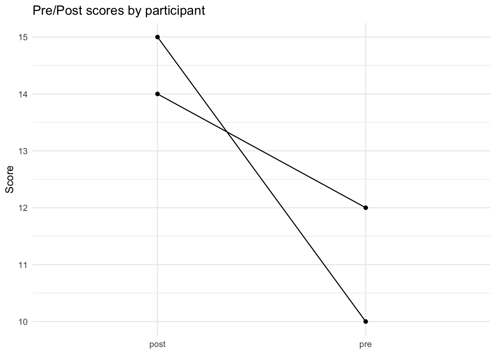
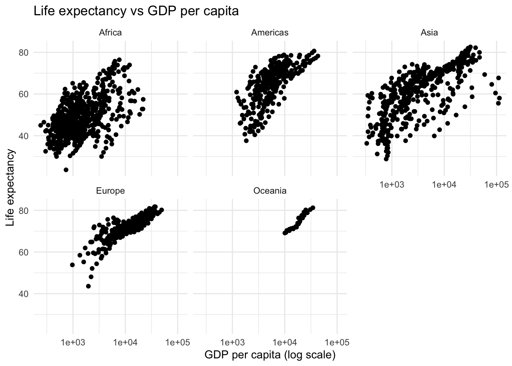
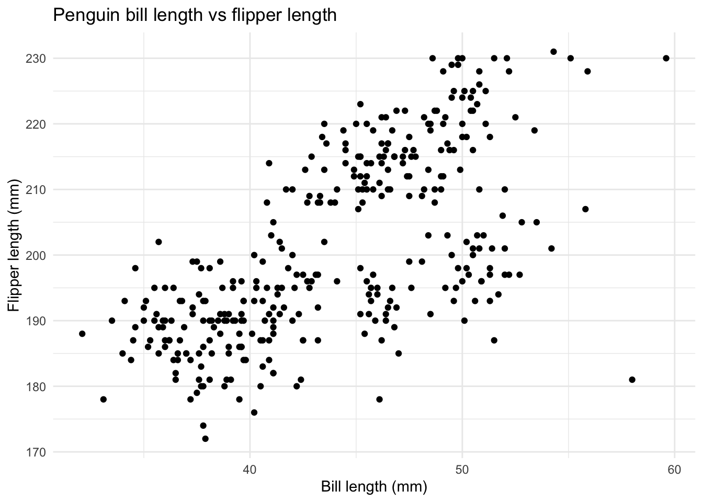
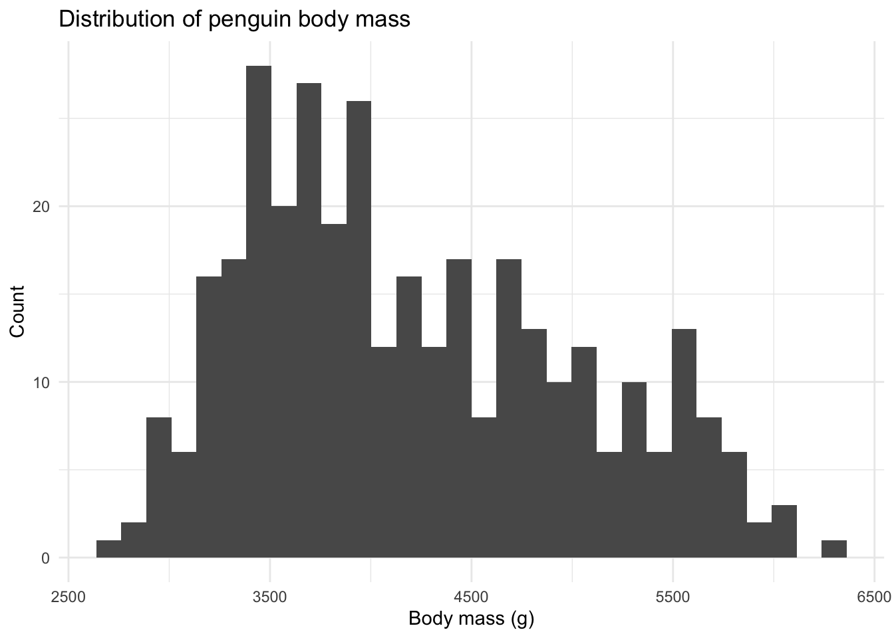

The goal of this portfolio piece is to create the foundational portion of a personal quick-reference guide for using R and Git/GitHub that I can rely on after graduation. Because I plan to continue working with data in research settings, this resource documents the essential setup steps, project organization strategies, data import processes, data wrangling techniques, and basic visualization skills that form the backbone of any analysis workflow. By organizing these core concepts into clear explanations with example code and troubleshooting notes, I reinforce the technical habits I developed in Dr. Garrison’s Applied Data Psychology course while strengthening my ability to explain and apply foundational data science skills independently. This guide is designed to be practical, concise, and expandable as my skills continue to grow.
Consistent code style makes your work easier to read, debug, and share (especially when asking for help).
Key habits: clear object names, consistent spacing, readable pipes, and section headers/comments.
When something breaks: run code in smaller chunks, check object classes, and read error messages literally.
# messy
df<-df%>%filter(x==1)%>%mutate(y=z*2)
# readable
df <- df %>%
dplyr::filter(x == 1) %>%
dplyr::mutate(y = z * 2)Import data with readr (part of tidyverse).
Immediately inspect structure and variable types.
Sanity-check row counts and key variables.
data <- readr::read_csv("data/mydata.csv")
dplyr::glimpse(data)
dplyr::count(data, some_key_var, sort = TRUE)
summary(data)Tidy data makes everything downstream easier: one row = one observation; one column = one variable.
If plotting feels difficult, the data may need reshaping.
toy <- tibble(
id = c(1, 2),
pre = c(10, 12),
post = c(15, 14)
)
toy_long <- toy %>%
tidyr::pivot_longer(
cols = c(pre, post),
names_to = "time",
values_to = "score"
)
ggplot(toy_long, aes(x = time, y = score, group = id)) +
geom_line() +
geom_point() +
labs(
title = "Pre/Post scores by participant",
x = NULL,
y = "Score"
) +
theme_minimal()
Core verbs: filter(), select(), mutate(), arrange(), group_by() + summarise().
Default pattern: filter → select → mutate → group/summarise → arrange.
If you get strange errors, check class(object) and use dplyr::function() explicitly.
gapminder_summary <- gapminder %>%
dplyr::filter(year >= 2000) %>%
dplyr::mutate(gdp = pop * gdpPercap) %>%
dplyr::group_by(continent) %>%
dplyr::summarise(
mean_lifeExp = mean(lifeExp, na.rm = TRUE),
total_gdp = sum(gdp, na.rm = TRUE),
n_rows = dplyr::n()
) %>%
dplyr::arrange(dplyr::desc(total_gdp))
gapminder_summary## # A tibble: 5 × 4
## continent mean_lifeExp total_gdp n_rows
## <fct> <dbl> <dbl> <int>
## 1 Americas 73.0 3.59e13 50
## 2 Asia 70.0 3.58e13 66
## 3 Europe 77.2 2.79e13 60
## 4 Africa 54.1 4.22e12 104
## 5 Oceania 80.2 1.50e12 4ggplot(gapminder, aes(x = gdpPercap, y = lifeExp)) +
geom_point() +
scale_x_log10() +
facet_wrap(~ continent) +
labs(
title = "Life expectancy vs GDP per capita",
x = "GDP per capita (log scale)",
y = "Life expectancy"
) +
theme_minimal()
Structure: data + aes() + geoms (+ layers).
Two common EDA types:
Always include titles and axis labels so the plot stands alone.
ggplot(penguins, aes(x = bill_length_mm, y = flipper_length_mm)) +
geom_point() +
labs(
title = "Penguin bill length vs flipper length",
x = "Bill length (mm)",
y = "Flipper length (mm)"
) +
theme_minimal()
ggplot(penguins, aes(x = body_mass_g)) +
geom_histogram(bins = 30) +
labs(
title = "Distribution of penguin body mass",
x = "Body mass (g)",
y = "Count"
) +
theme_minimal()
p <- ggplot(penguins, aes(x = species, y = body_mass_g)) +
geom_boxplot() +
labs(
title = "Body mass by species",
x = NULL,
y = "Body mass (g)"
) +
theme_minimal()
ggsave("penguins_body_mass.png", plot = p, width = 7, height = 5)